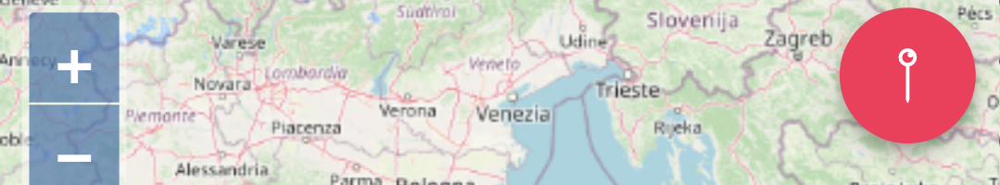

<ion-header>
  <ion-toolbar>
    <ion-buttons slot="start">
      <ion-button (click)="dismissModal()"><ion-icon size="large" name="close-circle-outline"></ion-icon></ion-button>
    </ion-buttons>
    <ion-title>Guida</ion-title>
  </ion-toolbar>
</ion-header>

<ion-content>
  <ion-card>
    
    <ion-card-header>
      <b>Passo 1: Dati</b>
    </ion-card-header>
    <ion-card-content>
      Aggiungi informazioni sulla segnalazione
    </ion-card-content>
  </ion-card>
  <ion-card>
    
    <ion-card-header>
      <b>Passo 1: Avanzate</b>
    </ion-card-header>
    <ion-card-content>
      Aggiungi informazioni avanzate sulla segnalazione
    </ion-card-content>
  </ion-card>
  <ion-card>
    
    <ion-card-header>
      <b>Passo 2: Foto</b>
    </ion-card-header>
    <ion-card-content>
      Allega almeno una foto descrittiva
    </ion-card-content>
  </ion-card>
  <ion-card>
    
    <ion-card-header>
      <b>Passo 3: Mappa</b>
    </ion-card-header>
    <ion-card-content>
      Segna con lo spillo il luogo della segnalazione
    </ion-card-content>
  </ion-card>  
</ion-content>
